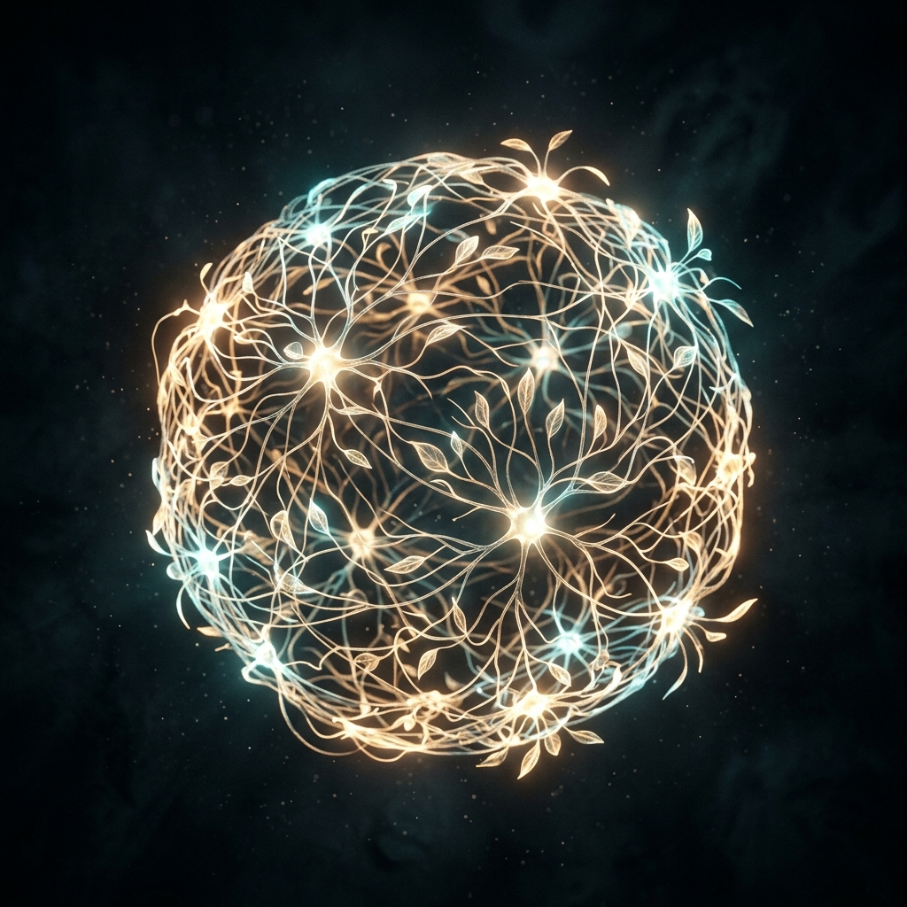

PHILOSOPHY
Engineering the syntax of algorithms with the elegance of natural interaction.
As a Computer Science & Engineering student, I am dedicated to exploring the fundamental principles of computation and spatial computing. My mission is to bridge the gap between low-level system efficiency and high-level interactive precision, developing Augmented Reality and Spatial interfaces that operate seamlessly with human gestures.
Grounded in a rigorous CSE academic background, my approach combines core competencies in computer vision, kinematics, and software architecture with a passion for intuitive UI/UX. I view every line of code as an architectural element, striving for clarity, durability, and quiet innovation in a noisy technological landscape.
Core Capabilities
Spatial Computing
AR/VR ARCHITECTURE
Computer Vision
POSE ESTIMATION
Interactive UI/UX
HUMAN-CENTRIC INTERFACES
Full-Stack Dev
PERFORMANT WEB APPS
Technical Expertise

The Curated Archive
A technical repository documenting my journey as a CSE student exploring the intersection of spatial computing and web technologies. A selection of research-driven implementations and applied engineering projects.
AR / GESTURE
NEXUS Particle Interface
Developed a high-performance web-based AR interface utilizing Three.js and MediaPipe for complex particle manipulation through intuitive hand gestures.
AR / COMPUTER VISION
Shadow Clone Jutsu AR
Engineered a spatial computing application that accurately tracks complex hand signs to dynamically generate perspective-corrected virtual clones around the user.
AR / EDUCATION
MoleculeMotion Viewer
Designed a web-based scientific visualization tool that renders interactive holographic projections of complex molecular structures for immersive learning.
WEBGL / INTERACTIVE
Shape View Particle System
An interactive 3D particle field visualization that morphs into complex geometric formations, dynamically reacting to user interaction and gesture controls.
AR / COMPUTER VISION
G-Intelligence System
A sophisticated advanced gesture recognition system featuring a high-tech HUD overlay, encrypted data streams, and procedural audio feedback based on hand tracking.